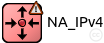
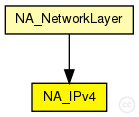
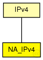

This documentation is released under the Creative Commons license
This documentation is released under the Creative Commons licenseIPv4 hacked module. Allow attacks on IPv4 INET layer.
Allowed attacks (by its corresponding tag):
See also: NA_Attack, NA_AODVUU
Author: Gabriel Maciá Fernández, gmacia@ugr.es
Date: 01/22/2013
The following diagram shows usage relationships between types. Unresolved types are missing from the diagram.
The following diagram shows inheritance relationships for this type. Unresolved types are missing from the diagram.
| Name | Type | Description |
|---|---|---|
| IPv4 | simple module |
Implements the IPv4 protocol. The protocol header is represented by the ~IPv4Datagram message class. |
| Name | Type | Description |
|---|---|---|
| NA_NetworkLayer | compound module |
Compound module allowing hacked modules. Modificated from NetworkLayer module. |
| Name | Type | Default value | Description |
|---|---|---|---|
| procDelay | double | 0s | |
| timeToLive | int | 32 | |
| multicastTimeToLive | int | 32 | |
| protocolMapping | string | ||
| fragmentTimeout | double | 60s | |
| forceBroadcast | bool | false |
| Name | Value | Description |
|---|---|---|
| display | i=block/routing,red;i2=status/excl3 | |
| dropping | ||
| delay |
Delay attack in IPv4 Layer |
|
| class | NA_IPv4 |
| Name | Direction | Size | Description |
|---|---|---|---|
| transportIn [ ] | input | ||
| transportOut [ ] | output | ||
| queueIn [ ] | input | ||
| queueOut | output |
| Name | Type | Unit |
|---|---|---|
| delayed | long | |
| droppings | long | |
| rcvdPkt | long |
| Name | Title | Source | Record | Unit | Interpolation Mode |
|---|---|---|---|---|---|
| delayed | Number of packet delayed | count, vector | none | ||
| droppings | Number of drops | count, vector | none | ||
| rcvdPkt | Number of packet received | count, vector | none |
// // IPv4 hacked module. Allow attacks on IPv4 INET layer. // // Allowed attacks (by its corresponding tag): // - Dropping // - Delay // // @see NA_Attack, NA_AODVUU // // @author Gabriel Maciá Fernández, gmacia@ugr.es // @date 01/22/2013 simple NA_IPv4 extends IPv4 { parameters: //#Labels for the potential attacks that affect this module @dropping; // Dropping attack in IPv4 Layer @delay; // Delay attack in IPv4 Layer //# Normal parameters @display("i=block/routing,red;i2=status/excl3"); @class(NA_IPv4); //# Dropping attack statistics @signal[droppings](type=long); // Signal for number of packet discarded @statistic[droppings](title="Number of drops"; record=count,vector; interpolationmode=none); // Record the number of packet discarded //# Packet received attack statistics @signal[rcvdPkt](type=long); // Signal for number of packet received @statistic[rcvdPkt](title="Number of packet received"; record=count,vector; interpolationmode=none); // Record the number of packet received //# Delay attack statistics @signal[delayed](type=long); // Signal for number of packet delayed @statistic[delayed](title="Number of packet delayed"; record=count,vector; interpolationmode=none); // Record the number of packet delayed }
This documentation is released under the Creative Commons license